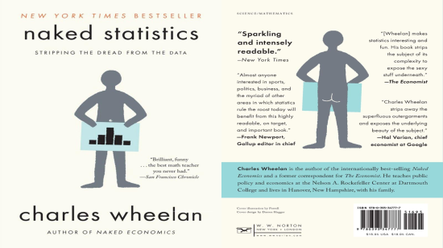

벌거벗은 통계학(Naked Statistics)에서 제시된 통계 사례

1장 진실, 거짓, 그리고 탐정
- 지니계수
- 기술통계로써 볼링스코어
- 학업 수행 정도 평가를 위한 평균 평점 및 GPA(Grade Point Average)
- 1990년대 시카고대학 NORC(National Opinion Research Center)의 미국인 성생활에 대한 조사
- 카지노에 유리한 기본 확률
- 기업들의 리스크 관리를 위한 엔지니어링 프로세스
- 보험 산업의 원리
- 데이터 범죄수사학에 특화된 Caveon Test Security
- 애틀랜타에 사는 Delma Kinney의 2008·2011 100만 달러 복권당첨
- 앨런 크루거(Alan Krueger) 무엇이 테러리스트를 만드는가(What Makes a Terrorist)
- 대럴 허프 Darrelll Huff, 새빨간 거짓말, 통계(How to Lie with Statistics)
2장 메이저리그, 역대 최고의 야구선수는 누구일까?
- Jeffrey Grogger와 Alan Krueger는 미국 중산층의 경제적 건전성 평가에 물가상승 고려, 지난 수 십 년간 임금의 중앙값 변화 조사, 25 및 75번째 백분위의 임금 변화 조사 제시
- Baseball Info Solution의 Steve Moyer는 선수를 평가하는 유용한 통계치로 출루율, 장타율, 타수 제시
- 회사가 판매하는 각 프린터별로 품질보증 기간 내에 접수된 품질 결함 발생 건수
- 비행기 탑승객과 마라톤 선수의 몸무게 평균
- 질환과 관련된 혈액검사 결과의 중앙값, 평균, 표준편차
- 미국 남성 평균 신장과 표준편차
- Wall Street Journal에서 미국인들이 쇼핑몰에 주차할 때 입구를 중심으로 한 정규분포 형태를 보인다는 기사
- 퍼센트 변화의 비대칭성 설명을 위한 상품가격의 동일 비율 인하 및 인상
- 전년도 대비 회사 수익율 증감
- 일리노이주의 판매세율, 소득세율
- 지수(index)의 예로 NFL의 passer rating
- Malcolm Gladwell는 New Yorker 기사에서 Car and Driver 가 발표한 순위를 예를 들어 순위 매기는 것에 대한 사람들의 강한 욕구를 비판
- UN 인간개발지수(HDI, Human Development Index)
3장 숫자의 함정, 사실을 왜곡하는 아주 교묘한 거짓말들
- Mark Twain 曰 “거짓말에는 세 종류가 있다. 거짓말, 새빨간 거짓말 그리고 통계”
- 정밀성과 정확성의 측면에서 골프용 거리측정기
- 월스트리트 기업들의 리스크 예측 모델인 value at risk와 2008년 금융위기
- 미국 제조업은 얼마나 건전한가?
- CIA의 World Factbook에는 미국이 중국과 독일에 이어 전 세계에서 세번째 규모의 제조업 수출국이라는 자료 제시
- Economist의 “미국의 증가하는 제조업 생산량과 감소하는 일자리” 그래프
- 분석 단위 차이에 따른 상반된 입장의 예시
- 학교와 학생으로 기준을 달리 했을때, 전국 학교 수준 평가의 차이
- 주 소득과 국민 소득으로 기준을 달리 했을 때, 국가 경제 성장 여부
- 세계화는 지구 상의 소득 불평등을 완화시키는가 아니면 악화시키는가에 대한 물음과 Economist의 국가가 아닌 사람들을 고려할 때 지구촌 소득 불평등은 급격히 감소하고 있다는 지적
- verizon과 AT&T의 광고컨셉이 각각 서비스 범위가 넓은 지역과 생활권 중심의 서비스
- 평균과 중앙값
- George W. Bush 행정부가 감세 정책 추진하며 9,200만 미국인들이 평균 1,000달러 이상의 감면을 받는다고 주장하였으나, 세금감면의 중앙값은 100달러도 되지 않으며, The New York Times는 데이터는 거짓말을 하지 않지만 그 중 일부는 침묵한다고 언급
- 신약 투약으로 환자의 3~40%가 완치 되었다는 드라마틱한 변화를 기대 수명의 중앙값이 2주 증가했다는 기술로는 파악 불가
- Stephen Jay Gould의 중앙값은 메시지가 아니다(The Median Isn’t the Message)
- 1박에 €180인 프랑스 호텔과 £150인 런던의 호텔
- 명목수치(Nominal Value)와 실질수치(Real Value)
- 2010년 미국 연방 최저임금 그래프
- 2011년 기준 미국에서 가장 큰 매출을 올린 영화 5편 아바타(2009), 타이타닉(1997), 다크나이트(2008), 스타워즈 에피소드 IV(1977), 슈렉2(2004)
- 2011년 기준 인플레이션을 감안한 미국에서 가장 큰 매출을 올린 영화 5편 바람과 함께 사라지다(1939), 스타워즈 에피소드 IV(1977), 사운드 오브 뮤직(1965), E.T.(1982), 십계(1956), 아바타(2009) 14위, 슈렉2(2004) 31위
- Illinois Cook County 결핵 요양소의 정부 지원액이 527% 증가
- The Chicago Sun-Times의 일반적인 주택 보유자의 세금이 $1.15에서 $6로 상승했다는 보도
- 미 국방부 예산이 (당시) $7,000억으로, 국방장관은 올 예산이 단 4% 증가할 것으로 예상한다고 보고하였으나, 이는 NASA의 전체 예산보다 많고 노동부와 재무부 예산을 합한 금액과 비슷
- 미국 선별입학학교의 경우, 시험 성적이 높다는 이유로 훌륭한 학교로 인식되며 이런 학교에 입학하기 위해서는 좋은 시험 성적이 있어야 함.
- 부시 행정부 전 교육부 장관 Rod Paige가 huston 교육감 재직 시절, huston시는 고등학생 중퇴율이 1.5%라고 발표했으나 CBS 시사 프로그램 60minutes에서 조사한 결과 25~50%로 밝혀졌고, 이런 통계 조작의 이면에는 중퇴학생들을 전학처리하는 등의 방법이 사용
- 뉴욕주에서 심장병 전문의 평가를 위해 심장동맥 확장 수술 채점표를 도입하였으나 심각한 뱡세를 보이는 환자들의 수술을 거부하는 부작용 발생
- 채점표에 대해 로체스터 대학의 의·치과 대학원의 심장병 전문의를 대상으로 실시한 결과에 따르면 응답자 83%가 이런 공식 통걔로 수술을 받지 못했을 수도 있었을 것이라거나, 응답자 79%는 사망률에 대한 자료가 수집되고 공개된다는 사실이 의료행위에 대한 의사들 개개인의 판단에 영향을 미친다고 응답
- 통걔지수가 다수의 지표들을 하나로 합치는 데에서 비롯되는 왜곡
- USNWR의 2·4년제 대학 평가에 16개 지표 사용하는데, Micheal McPherson은 “사용된 자료들로는 서열을 매길 만큼의 정확도를 보장할 수 없음에도 불구하고, 이 목록이 학교들을 서열 순으로 평가한 것이라고 주장한다는 점이 문제"라고 했고, 이에 USNWR은 “각각의 지표에 얼마의 가중치를 부여할 것인지는 학교의 질을 판단하는 척도 가운데 무엇이 가장 중요한가에 대한 우리의 판단에 따랐다.“고 밝혔으며, Micheal McPherson은 “USNWR의 순위는 학생들이 4년간 받는 교육이 얼마나 이들의 능력을 향상시키거나 지식을 풍부하게 만드는 가와 관련된 내용은 전혀 알려주지 않는다.“고 지적
- Malcolm Gladwell은, 전미시간 수석대법관이 100여 명의 변호사들에게 로스쿨 열 곳을 우수한 순으로 꼽아달라는 내용을 담아 배포한 설문지를 인용하여, 로스쿨이 존재하지도 않은 펜실베니아 주립대학이 중간정도의 순위를 차지했다며, 동료평가의 방법론을 비판
- Leon Botstein “사람들은 쉬운 대답을 사랑한다. 가장 좋은 학교는 어디인가? 바로 1위에 오른 학교이다.“라며 USNWR 순위가 사라지지 않을 것임을 지적
- 저자 “법에 대한 세부 지식이 범죄 행위를 방지하지 못하듯 통계에 대한 세세한 지식이 부정한 행위를 막지 못한다. 통계와 범죄 모두에서 악당들은 흔히 자신이 무슨 일을 벌이는지를 정확히 알고 있다.”
4장 넷플릭스는 내가 좋아하는 영화를 어떻게 찾아낼까?
- 변수들의 연관성을 나타내는 상관계수
- 미국 성인 100명을 무작위로 선정하여 키와 몸무게의 관계에 대한 산포도
- 텔레비전 수(부유한 잡)와 SAT의 상관관계
- SAT 출제 및 관리를 주관하는 College Board에 따르면 SAT는 “모든 학생에게 대학 진학의 공평한 기회를 주기위해 만들어졌다"고 밝힘.
- 고등학교 평균평점과 대학교 1학년 평균평점 사이의 상관계수는 0.56이고, sAT총점과 대학1학년 평균평점 사이의 상관관계는 0.56이며, SAT점수와 고등학교 평균평점을 조합한 점수와 대학1학년 평균평점 사이의 상관관계는 0.64
- 개인의 취향을 찾아내는 넷플릭스 알고리즘
- 특정 영화에 평점 부여 → 개인 평점을 비교하여 상관관계가 높은 개인회원 검색 → 상관관계가 높은 개인회원이 높게 평가한 영화 중 아직 시청하지 않은 영화 추천
- 2006년 넷플릭스는 상금 100만 달러를 걸고 영화 추천 기법을 최소 10퍼센트 이상 향상시키는 매컽니즘을 설계하는 대회 개최
- 상관관계의 핵심 “당신은 내가 좋아하는 것을 좋아하고, 내가 싫어하는 것을 싫어하는 경향이 있군요. 그럼 조지클루니의 새 영화는 어땠나요?”
5장 보증 기간 연장에 돈 쓰지 말라
- Joseph Schlitz Brewing Company는 1981년 170만 달러를 들여 NFL 하프타임에 자사와 경쟁사 맥주 블라인드 테스트 생방송 광고 진행
- 오스트레일리아 교통안전국이 발표한 다양한 운송수단별 사망 위험을 수령화한 보고서
- 2011년 9월 6.5t의 NASA 위성이 지구로 낙하 중 대기권 진입 후 분해될 것으로 예상
- Steven Levitt과 Stephen Dubner의 괴짜경제학(Freakonomics)에서 벽장 속의 총보다 뒷뜰의 수영장이 더 위험
- 코넬대학 연구원 Garrick Blalock, Vrinda Kadiyali, Daniel Simon의 논문에는 9·11 공격 이후 수천명의 미국인이 비행기 여행을 두려워해 사망했을 수 있다고 언급
- CSI 감식관에 의한 DNA 샘플 검증
- 9·11사태 때 세계무역센터에서 발견된 유해의 신원확인을 위해 DNA 사용
- Los Angeles Times는 2008년 범죄의 증거로 DNA 사용에 대한 기사에서, 수사기관에서 일반적으로 사용하는 확률이 우연의 일치일 가능성을 축소하고 있는 것은 아닌지 의문 제기
- 애리조나주 과학수사연구소 분석가가 주 DNA DB를 검사하던 중 혈연이 아닌 두 강력범 DNA에서 9개의 유전자좌가 일치하는 것을 발견하였고, FBI는 관련 없는 두 사람 사이에서의 이런 가능성을 1/11,300,000,000이라고 표명
- 비밀번호의 보안수준을 높이기 위한 조합
- 사고 후 보험료 상승은 지급한 보험료의 만회가 아니라 사고확률의 상승에 기인
- Las Vegas 도박장의 craps라는 게임에서 요구하는 7또는 11이 나올 가능성은 8/36
- 미식축구에서 터치다운 후 3야드라인에서 공을 차서 쉽게 1점을 추가할지, 컨버전을 시도하여 어렵게 2점을 추가할지의 선택
- 일리노이주 복권의 당첨확률은 새 복권 교환 확률은 1/10, $2 당첨 1/15, $4 당첨 1/42.86, $5 당첨 1/75, $1,000 당청 1/40,000 등이고 1달러짜리 복권의 기대 금액은 약 $0.56
- 보험사의 관점에서 자동차가 $40,000 보험에 들어있고 어느 해든 차 도난 확률이 1/1,000 이라면 차의 기대 손실은 $40(=$40,000*1/1,000) 이면 도난 부분에 대한 연간 보험료는 $40 이상이어야 함.
- Warren Buffett 같은 부자는 어떤 안 좋은 일이 생겨도 감당할 수 있기때문에 보험에 가입하지 않음으로서 금전절약이 가능
- $99짜리 새 프린터 구입시 판매처에서 $25(혹은 $50)를 더 내면 1년(또는 2년) 연장보증 해 주겠다는 옵션에서 추론가능한 내용
- 판매처는 이윤을 최대화하려는 이윤추구 기업
- 판매원은 소비자가 품질보증 연장 옵션 선택을 간절히 희망
- 1·2번의 내용을 토대로 보증 비용이 판매처가 프린터를 수리하는데 투입되는 예상 비용을 상회할 것으로 추론
- $99짜리 프린터가 고장나서 주머닛돈으로 수리하거나 교체하더라도 인생의 리스크는 아님.
- 대머리 치료법 연구 번처기업에 $1,000,000 투자시
- 치료법 미 발견시 투자금 중 $250,000만 회수되고, 효과있는 치료법 발견 가능성 30%
- 치료법 발견한 경우에도 FDA 안전성 승인 가능성은 60%
- FDA 승인을 받았다 하더라도 경쟁사가 비슷한 시기에 더 좋은 약을 출시할 확률도 10%
- 이상의 리스크 없이 최고 투자 수익 예상치는 $25,000,000
- 10만명당 1명이 걸리는 고위험 질병에 대해 99.9999%의 정확성을 가진 검사 키트가 있고 잘못된 음성판정은 절대 없지만 1만번 중 1번꼴로 잘못된 양성판정이 가능한 경우 175,000,000명 검사시 의사결정 트리
- 1,750명만 질병을 가지고 있고, 이들은 모두 양성 판정
- 비질환자 174,998,250명 중, 99.9999%는 음성판정 0.0001%인 17,500명이 양성판정
- 결과적으로 19,250명이 양성판정을 받는데, 실제 질환자는 9.1%에 불과
- 미SEC(US Securities and Exchange Commission) 인수합병 발표 직전 회사의 주식을 대량구매하거나 저조한 실적발표 전 회사의 주식을 투매하는 의심스러운 활동 및 오랜기간 고수익 투자 매니저 등 감시
- New York Times의 2011년 범죄발생전에 경찰 출동이라는 기사에서, 특정 장소에서 차량털이 범죄 발생가능성이 높다고 예측한 컴퓨터 프로그램에 따라 SantaCruz 시내의 주차장에 형사를 파견한 사건 소개
- 데이터 마이닝과 예측분석: 정보수집과 범죄분석(Data Mining and Predictive Analysis: Intelligence Gathering and Crime Analysis) 미 수사 기관의 통계 지침서
- 신용카드회사 관점에서 신용도가 좋은 고객은 청구액을 지불하기 때문에 돈이 되지 않는 고객이고, 대금 잔액이 많고 고율의 이자를 내는 고객은 채무를 불이행하지 않는 한 우수 고객
- New York Times Magazine의 신용카드 회사가 알고 있는 것들이라는 기사에는 Canadian Tire의 이사 J.P.Martin이 발견한 흥미로운 사실을 소개
- 저렴하고 일반적 엔진오일을 사는 사람들은 비싸고 유명한 브랜드의 물건을 사는 사람들보다 신용카드 대금을 제때 지불하지 않을 가능성 높음.
- 가정용 일산화탄소 감지기나 의자 다리에 붙이는 바닥 긁힘 방지용 펠트패드를 구입한 사람들은 거의 대금 지불 기한 지킴.
- 크롬으로 된 두개골모양 자동차 액세서리나 초대형 반동 추진 엔진 배기 장치를 구입하는 사람들은 대금 지불 기한 넘김.
5½장 몬티 홀의 딜레마 - 염소와 자동차는 어디에 있을까?
-
Monty Hall problem은 Let’s Make a Deal이란 TV쇼에서 참가자들이 직면했던 확률과 관련된 유명한 수수께끼
- New York Times 컬럼니스트 John Tierney는 몬티홀 현상에 대한 칼럼과 프로그램 제공
- 춤추는 술고래의 수학 이야기(The Drunkard’s Walk)의 저자 Leonardo Mlodinow에 따르면 선택을 바꾼 참가자가 이길 확률이 2배 가량 높음.
1990년 Marilyn vos Savant가 잡지 퍼레이드의 칼럼 “사반트에게 물어보세요"에서 증명
6장 국제 금융 시스템을 망쳐놓은 확률의 달인들
- 2008년 이전 월스트리트의 금융회사들은 일반적 리스크 지표은 VaR(Value at Risk) 모델 사용
- New York Times의 기자 Joe Nocera는 “금융시장 분석가가 아닌 사람에게 VaR은 단 하나의 숫자, 달러로 리스크를 나타내는 아주 매력적이고 훌륭한 장점을 가지고 있다.“며, 또한 블랙 스완: 0.1퍼센트의 가능성이 모든 것을 바꾼다.(The Black Swan: The Impact of the Highly Improbable)의 저자 Nicholas Taleb의 의견을 요약하여 “가장 큰 리스크는 당신이 한번도 본적이 없고 그렇기 때문에 측정할 수 없다. 지금까지 이것은 당신 생애에 일어난다고 생각조차 하지 못할 정도로 일반적인 확률을 벗어나 있는 것처럼 보이지만, 당신이 아는 것보다 훨씬 더 자주 발생한다.“고 언급
- Alan Greenspan은 2007년 금융위기 발생 후 “하지만 2007년 여름, 지식 체계 전체가 무너졌습니다. 리스크 관리 모델에 입력된 데이터는 운 좋은 시절의 지난 20년의 자료들이었기 때문입니다. 그 대신 역사적으로 여러웠던 시절에 더 적합하도록 모델을 조정했다면, 자본 요건이 훨씬 상향되었을 것이고 금융계는 더 나은 모습일 겁니다.“라고 의회위원회에서 진술
- 헤지펀드 매니저 David Einhorn “평소에 잘 작동하다가도 사고가 나면 작동하지 않는 에어백과 같습니다.”
- 전 미 재무장관 Hank Paulson “많은 기업들이 비상시에 자산을 매각하여 현금을 모을 수 있다고 가정한다. 하지만 위기 상황에서는 다른 기업들 역시 현금이 필요하므로 누구나 같은 종류의 자산을 매각하려고 한다.”
- 독립적이지 않은 사건을 독립사건으로 추정
- 항공사에서 대서양 횡단 비행시 제트기 엔진이 고장날 확률은 1/100,000인데, 두 개가 장착되므로 두 엔진이 모두 멈출 확률은 (1/100,000)2이므로 1/10,000,000,000로 생각할 수 있지만 각 엔진의 고장은 독립적이지 않을뿐만 아니라, 엔진하나가 고장나면 다른 엔진도 고장날 확률은 1/100,000보다 상승
- 유아돌연사증후군(SIDS, Sudden Infant Death Syndrome)과 관련하여 Economist는 “한 명의 유아가 사망하는 것은 비극이고, 두 명의 유아가 사망하는 것은 의심할 만한 일이며, 세 명의 유아가 사망하는 것은 살인으로 생각하는 메도의 법칙(Meadpw’s Law)은 만약 어떤 사건이 드물게 일어난다면 한 가족에서 똑같은 사건이 두 번 이상 일어날 수 없으므로 우연일 가능성이 없다는 개념에 기초를 둔다.“며 통계적 독립성에 대한 오해로 메도의 증언이 어떻게 잘못되었는지를 설명
- Thomas Gilovich·Robert Vallone·Amos Tversky의 연구에 따르면 Hot Hand, 즉 농구 경기 중 선수들이 연이어 골을 성공시키는 현상이 주기적으로 반복된다는 생각인데, 연이은 슛의 결과 사이에 양의 상관관계가 있다는 증거는 없다고 밝힘.
- 마치 암 다발지역이란 개념처럼
- 검찰의 오류: ①범죄현장에서 채취한 샘플이 피고로부터 채취한 샘플과 일치, ②현장에서 발견된 샘플이 피고가 아닌 다른 사람의 샘플과 일치할 확률은 1/1,000,000
- 평균회귀
- Sports Illustrated 징크스: Sports Illustrated 잡지의 표지에 등장하면 성적이 떨어진다는 징크스
- Ulrike Malmendier·Geoffrey Tate는 비즈니스효과에 대해 “CEO가 슈퍼스타 자리에 오르면 새로 얻은 명성 때문에 흐트러지게 된다. 회고록을 쓰고 사외이사 자리를 제안받고 트로피 배우자를 찾기 시작한다. 우리의 연구 결과에 따르면 미디어가 만든 슈퍼스타 문화는 단지 평균으로 복귀하는 수준이 아니라 그 이상으로 행동을 왜곡시킨다.“고 언급
- 통계적 차별
- 유럽 고용사회위원회 Anna Diamantopoulou 위원은 보험 회사가 남성과 여성에게 서로 다른 보험료를 부과하는 것은 유럽연합의 평등 대우 원칙에 위배되므로 이를 금지하는 행정명령이 필요하다고 주장
- 2012년부터 실행중인 유럽연합의 성별 보혐료 차등 적용 금지 정책은, 성별과 보장되는 위험사이의 관련성이 없다는게 아니라 성별에 근거해 보험료를 차등 적용하는 행위를 허용할 수 없다는 것임.
7장 쓰레기를 넣으면 쓰레기가 나온다
- 데이터에 요구되는 조건
- 모집단을 대표하는 표본
- 비교 가능한 것
- 없음
- 2012년 봄 Science지 수컷초파리가 암컷초파일에게 계속 퇴짜 맞았을 때, 술로 슬픔을 달랜다는 연구 소개
- Massachusetts Framingham에셔 수행된 프레이밍햄 심장 연구(Framingham Heart Study)
- 페리 미취학 아동 연구(Perry Preschool Study)
- 질병의 평균지속 기간이 43일이고 표준편차가 24일인 경우, 정규분포를 따를 경우, 1표준편차 즉 19
67일 사이에 68%의 사례가, 2표준편차 즉 091일 사이에 95%의 사례 포함. - 선택편향(Selection Bias)
- 잡지 The New Yorker의 영화평론가 Pauline Kael “닉슨이 이겼을 리가 없다. 내 주변의 어느 누구도 그에게 투표하지 않았다.”
- Iowa Strawpoll(미공화당이 대통령 선거 코커스(당원대회)를 앞두고 실시하던 대규모 비공식 투표 행사)의 공화당 후보 예측 실패
- 1936년 Literary Digest의 설문조사 표본 편향
- 전립선암 치료의 부작용에 대한 보고서에서 제거수술, 방사선치료, 근접방사선치료 후 성관계 가능 경우가 각각 35%, 37%, 43%로 나타났지만 근접방사선치료가 가장 적게 성기능을 덜 감소시킨다고 결론내는 것은 부적정
- 자기선택편향(Self-selection Bias)은 약물치료 재소자의 사례에서 나타날 수 있음.
- 출판편향(Publication Bias)
- 긍정적인 연구결과는 부정적인 연구결과보다 출판가능성 높음.
- The NewYork Times의 우울증 치료제의 출판편향을 다룬 기사에서 “정부 허가를 받기 위해 Prozac이나 Paxil 같은 항우울제를 만드는 제조사들은 실제 진행한 임상 시험 결과의 1/3은 발표하지 않았는데, 그 결과 약물의 진정한 효과에 대해 의료진과 소비자를 호도
- 기억편향(Recall Bias)
- 현재를 과거에 일어났던 일들의 논리적 결과라고 인과관계를 적용하여 이해하려는 본능
- The New York Times Magazine은 1993년 하버드가 수행한 암에 걸린 사실이 여성이 어렸을 때 자신의 식습관을 기억하는데 어떤 영향을 미치는가에 대한 연구를 소개하며 “유방암 진단은 여성의 현재와 미래만 바꾼 것이 아니라 과거까지 바꾸었다. 유방암으로 진단 받은 여성은 무의식적으로 고지방 식사를 유방암의 근본 이유로 판단했고 자신이 고지방 식사를 했다고 무의식적으로 떠올렸다. 암과 같이 악명 높은 질병의 역사를 아는 사람이라면 누구에게나 지독하게 낯익은 패턴 그대로였다. 이 여성들은 과거 수천명의 여성들이 그랬던 것처럼 병에 걸린 원인을 찾아 기억을 더듬었고 그렇게 찾은 원인을 기억으로 불러들였다.“라고 소개
- 생존편향(Survivorship Bias)
- 뮤추얼펀드업계의 성공한 펀드만 보여주고 실패한 펀드는 숨기는 방식
- 투자상품에 대한 참고서적 Burton Malkiel의 시장 변화를 이기는 투자(A Random Walk Down Wall Street)
- 건강한 피험자 편향(Healthy User Bias)
- 비타민을 규칙적으로 섭취하는 사람들이 건강한 이유
- The Newyork Times의 건강관련 기자 Gary Taubes는 “처방받은 대로 액을 복용하거나 건강에 좋다고 생각하는 식단을 챙겨먹는 것처럼 스스로에게 좋은 활동에 충실한 사람들은 그렇지 않은 사람들과 다르다.”
8장 슈퍼스타, 통계학의 르브론 제임스를 기억하라
- 중심극한 정리 개별 데이터는 불규칙해도 평균은 정규분포로 수렴
- 우측으로 치우쳐져 있는 미국의 가계소득 분포
- Michigan Univ.의 미국인들의 변화하는 삶(American’s Changing Lives) 장기 계속 연구
- 표준오차(Standard Error) 표본평균들의 표준편차
- 프레이밍햄 심장연구(Framingham Heart Study)는 1948년 미국 매사추세츠주 프레이밍햄에서 시작된 대규모 장기 코호트 연구
9장 왜 교수님은 내가 부정행위를 했다고 생각했을까?
- 미연방재난관리국(The Federal Emergency Management Administration)의 추정으로는 번개에 1번 맞을 확률은 1/600,000
- 귀무가설(null hypothesis) 차이·효과가 없다.
- 대립가설(alternative hypothesis) 차이·효과가 있다.
- p-value 귀무가설이 참일 때, 지금 관측된 결과만큼 극단적인 값이 나올 확률
- 귀무가설을 기각한다는 것은, 관측된 결과가 귀무가설의 정규분포에서 양측(혹은 단측) 극단의 5% 영역에 해당하여, 귀무가설로 설명하기보다는 다른 가설을 세워 그 결과가 자연스럽게 들어갈 새로운 정규분포를 만드는 것이 더 합리적이라는 뜻
- 애틀랜타 표준시험 부정행위 스캔들(Atlanta Public Schools cheating scandal)
- 양측검정 정규분포 곡선의 양쪽 꼬리(좌·우)를 모두 고려
- 단측검정 정규분포 곡선의 한쪽 꼬리만 고려
- The New York Times는 카네기멜론대학이 판매하고 있는 뇌과학 튜터(Cognitive Tutor)라는 소프트웨어가 학교성적을 높여준다고 주장하지만 그렇지 않다는 것을 폭로
- The Wall Street Journal의 2011년 5월 일반 정신의 학회지(Archives of General Psychiatry)에 실린 논문을 요약한 기사 자폐증의 열쇠, 뇌의 크기(Link in Autism, Brain Size)
- 성격 및 사회심리학 저널(Journal of Personality and Social Psychology)에 대릴 벰(Daryl J. Bem)이 게제한 논문과 관련된 초능력 논문 게재 사건에 대하여 The New York Times는 “과학 법칙에 반하는 거의 모든 주장은 대단하며, 그래서 뒷받침하는 증거도 대단해야한다. 이를 고려하지 않는 행동(의례적인 사회과학 분석이 특히 그렇다.)은 많은 연구 결과를 사실보다 더 대단해 보이도록 포장한다.”
- 긍정오류 결과(Q)가 나타났다고 해서 원인(P)을 단정하는 건 위험하다. (후건 긍정의 오류, Affirming the Consequent)
- 전제: P → Q (만약 P라면 Q이다)
- 관찰: Q이다
- 잘못된 결론: 따라서 P이다
- 부정오류 원인이 없다고 해서 결과가 반드시 없다고 말할 수 없다. (전건 부정의 오류, Denying the Antecedent)
- 전제: P → Q (만약 P라면 Q이다)
- 관찰: ¬P (P가 아니다)
- 잘못된 결론: 따라서 ¬Q이다
- 긍·부정오류 사례
- 스팸필터 1종 오류는 스팸이 아닌 메일을 걸러내는 경우이고, 2종 오류는 스팸 메일을 허용하는 경우
- 암검사, 유방촬영술, PSA 등 1종 오류는 질병이 아닌 것으로 밝혀지는 긍정오류이고, 2종 오류는 질병을 놓치게 되는 부정오류
- 테러리스트 수감 1종 오류는 테러리스트가 아닌 사람을 수감하는 오류이고, 2종 오류는 테러리스트를 석방하는 오류
10장 여론을 보다 정확하게 파악하는 방법들
- 2011년말 The NewYork Times는 **미래에 대한 깊은 의혹과 분노가 미국 전역을 덮었다.**는 기사로 오바마행정부의 국정 운영 성과부터 부의 배분에까지 미국의 여론을 설명
- 미국인의 43%는 월스트리트 점령시위에 대체로 동의하고, 46%는 대다수 미국인의 시각을 반영한다고 생각
- 미국인의 89%는 미 정부가 제대로 일하지 않는다고 생각
- 미국인의 2/3는 부의 더 고른 배분 필요하다고 생각
- 미국인의 46%는 오바마의 직무수행에 만족한 반면, 동률은 국정운영 성과에 불만족
- 미국인의 9%만 의회의 일하는 방식에 만족
- 미 공화당 예비선거 유권자 중 80%가 지지후보 결정이 이르다고 응답
- 미 갤럽의 사형에 대한 미국인의 인식
- 2002년 이래 60%이상의 미국인이 살인범에 대한 사형에 찬성
- 2006년 조사에서는 형벌로 종신형 선호는 48%, 사형 선호는 47%
- 분할표본검정 두 범주형 변수 간의 독립성을 검정하는 방법으로, 일반적으로 카이제곱 독립성 검정(Chi-Square Test of Independence)을 의미
- 시카고대학 전미여론조사센터(National Opinion Research Center)의 섹슈얼리티의 사회적 구조:미국의 성생활(The Social Organization of Sexuality:Sexual Practices in the United States)
- 사람들은 보통 자신과 비슷한 부류와 섹스한다.
- 편차는 크지만 평범한 응답자는 ‘한달에 몇 번’ 정도 성행위를 한다.
- 남성 중 약 5%, 여성 중 약 4%가 동성 상대와의 성행위 경험을 밝혔다.
- 응답자 중 80%는 이전 해에 성관계 상대가 한 명이거나 아예 없었다.
- 성관계 상대가 한 명인 응답자는 상대가 다수이거나 아예 없는 응답자보다 더 행복했다.
- 기혼 남성 중 25%, 여성 중 10%가 혼외 성관계를 맺고 있다.
- 대다수 사람들이 전형적인 방식의 성관계를 하고 있다.
11장 데이터를 분석하는 기적의 만병통치약
- 화이트홀(Whitehall)연구 심장병에 영향을 미치는 사회적 요인을 알아내기 위한 연구로 1967·1984 두 차례 이루어지고 있으며, 현재도 진행중
- 최소제곱법(Ordinary Least Squares) 실제 값과 예측 값의 차이를 제곱해서 모두 더한 뒤 그 합을 최소화하는 방법
- 잔차(residual) 실제 값과 추정된 회귀선(예측값) 사이의 차이
- 미국의 변화하는 삶 연구(Americans’ Changing Lives, ACL) 1986년 시작된 미국의 대표적인 장기 추적 조사로, 거주지, 직업, 사회적 관계가 성인의 건강과 삶에 미치는 영향을 연구하며, 최근에는 DNA 분석 등 생물학적 요소까지 포함해 삶의 경험이 신체에 미치는 변화를 연구
- Ceteris paribus 다른 모든 조건이 동일하다면…
- t-분포 표본 평균을 이용해 모수를 추정할 때 생기는 불확실성을 반영하는 분포로, 표본 크기가 작을 때 정규분포 대신 사용하며, 표준정규분포와 비슷하지만 꼬리가 두꺼운 분포
12장 명백한 데이터 앞에서도 논리를 잊지 말라
- 하버드의과대학 및 하버드공공보건학과의 간호사 건강에 관한 연구에서 회귀분석을 통해 에스트로겐을 보충했을 때 심장병, 골다공증 등 폐경에 따른 질환예방에 의학적 효과가 있다고 주장
- 임상 대조실험에서 에스트로겐 투여군이 심장마비, 뇌졸증, 혈전증, 유방암 등이 빈번하게 발생
- 희귀분석의 오용 사례
- 비선형 관계를 분석하는데 선형 회귀분석을 사용한 경우
- 상관관계와 인과관계는 다르다
- 역인과관계
- 변수 누락 편향
- 다중공선성 서로 관련이 깊은 설명변수
- 데이터범위를 벗어난 추정
- 데이터마이닝 지나치게 많은 변수
- The New York Times Magazine는 “전염병학은 굉장히 멋진분야로 인간의 삶과 죽음에 관해 무척 중요한 깨달음을 준다. 하지만 쓰레기 같은 논문도 믿을 수 없을 만큼 많이 발표된다.“고 Richard Peto의 말을 인용
- 2011년 The Wall Street Journal은 “감추고 싶은 비밀(Dirty little secret)“이란 기사에서 “일류 피어리뷰 학술지에 실린 연구결과를 포함한 대부분의 결과는 복원불가능”
- John Ioannidis 박사는 미국의학협회지에 유명의학 학술지 3곳에 게재된 논문 49개 검토하여 1/3이 훗날 다른 연구로 반증되었다는 내용의 논문 게재
- 명백한 데이터 앞에서도 논리를 잊지 말라
- 올바른 회귀방정식을 세우는 과정이 통계적 계산과정보다 중요
- 회귀분석은 특정상황에 기반한 분석임을 명심
13장 하버드에 가면 정말로 인생이 바뀔까?
- 프로그램 평가 특정 정책이나 사회복지·교육 프로그램이 실제로 효과를 냈는지를 검증하는 과정으로, 사전·사후 비교, 통제집단 활용, 그리고 성과지표 분석을 통해 인과적 효과를 추정하며, 단순 만족도 조사에 그치지 않고, 행동·태도·지식 변화 같은 구체적 성과를 측정하는 것이 핵심
- 펜실베니아대학의 Jonathan Klick과 Alexander Tabarrok의 더 많은 경찰 배치 조치가 범죄율에 미치는 영향 연구
- 미국심장학회지에 실린 환자가 모르는 대규모 종교집단으로부터 안전한 수술과 빠른 회복을 기원하는 기도를 받았을 때 심혈관환자의 후유증이 줄어드는지 검증하기 위한 통제 실험
- 1985년부터 시작된 테네시주 STAR 프로젝트 학급당 학생수와 학습의 관계 규명하고자하는 노력
- 비동질통제 실험집단과 통제집단을 무작위로 배정하지 않고, 자연 상태에서 구분한 뒤 사전·사후 검사를 통해 효과를 비교하는 설계
- 2008년 payscale.com 조사에 따르면 디트머스와 프린스턴 졸업생 급여 중간값은 각각 $134,000와 $131,000
- The New York Times에 실린 Stacy Dale과 Alan Krueger의 연구 요약 “성공여부를 결정하는 것은 졸업장에 적힌 대학 이름이 아니라 자신의 동기, 포부, 능력에 대한 인식이다.”
- 이중차이법 정책이나 제도 변화의 ‘순수한 효과’를 추정하기 위해 사용하는 준실험적 통계 기법
- 불연속분석 특정 기준점(cutoff)을 기준으로 집단을 나누어 그 경계에서 발생하는 ‘불연속적인 변화’를 분석하는 기법
- Randi Hjalmarson은 감옥행이 미래범죄행동에 주는 영향 관찰 연구를 위해 엄격하게 적용되는 워싱턴주 범죄자 판결 가이드라인 활용
맺음말 통계로 답할 수 있는 다섯 가지 질문
- 뉴요커에 글래드웰의 기사 NFL과 투견은 얼마나 다른가?
- 2012년 미CDC는 미 아동 1/88명이 자폐스텍트럼장애 진단을 받았다고 보고
- 2012년 뉴욕시는 부가가치평가에 근거하여 공립학교 교사 18,000명의 교원평가 평가등급을 공개했고, LA타임스 또한 유사한 평가등급을 발표
- 다트머스대학 경제학 교수 Dough Staiger는 “교사의 성과를 평가하기 위한 과정에 쓰이는 하나의 도구일뿐”
- 캘리포니아대학 교수 Scott Carrell과 공군사관학교 교수 James West의 미 공군사관학교 교수평가에 관한 연구
- 경험이 별로 없고 유명 대학교 학위가 적은 교수가 가르친 학생은 기초과목 표준시험에서 좋은 성적을 보인 경우가 있는데 이는 시험을 위한 강의를 할 가능성이 높음을 의미
- 경험이 많고 유명대학 학위도 많은 교수에게 배운 학생은 다음에 배울 관련 필수 과목에서 더 좋은 성적을 보인 경우가 있는데 이는 다음에 배울 과목과 사관학교 졸업후 인생에서의 중요한 개념의 강의를 할 가능성이 높음
- 프랑스 경제학자 Esther Duflo는 무작위 통제 실험을 활용하여 개도국 빈곤층의 삶을 개선하기 위한 여러 조치에 대한 실험 진행
- 인도 학교 교사의 잦은 결근에 대한 실험
- 캐냐 농부가 추수 후 비료 구매 지원 실험
- 코트디부아르에서는 강우량에 따라 남성은 코코아와 커피를, 여성은 플랜틴바나나와 코코넛을 주로 재배하는데 여성이 기르는 작물이 풍년인 경우 수익 일부를 가족을 위한 식료품 구입에 지출
- The New York Times Magazine의 한 기자가 임신한 소비자를 찾아내어 유인하기 위해 애쓰는 소매점 Target의 예측분석팀 취재
- META의 CPRO인 Cris Cox는 The New York Times에 “정보화 사회가 풀어야 할 난제는 이 정보를 사용해 무슨일을 하는가 이다.”
참고자료
- 찰스 윌런(Charles J. Wheelan), 벌거벗은 통계학(Naked Statistics), 책읽는수요일, 2013-10-25